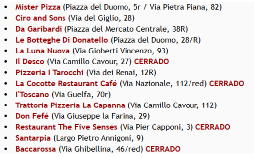

FLORENCIA
-
Starbene (Via dei Neri 13/r): obrador buenísimo. (13’ del hotel)
-
Heladería GROM (Via del Campanile 2): (7’ del hotel)
-
Ciro & Sons: consideradas de las mejores pizzas de toda Italia.
También tienen postres y helados. (8’ del hotel)
-
Pizzería Lorenzo de Médici (Via del Giglio 49):
céntricamente situada, pizzería preciosa. (7’ del hotel)
-
La Gratella: trattoría de comida típica toscana. (14’ del hotel)
-
Mr Pizza Firenze: pequeño local en uno de los laterales del Duomo.
Tiene dos localizaciones. (8’ del hotel)
-
Quinoa (Vicolo di Santa Maria Maggiore 1):
restaurante 100% sin gluten. (6’ del hotel)

← Volver a restaurante
← Volver al inicio